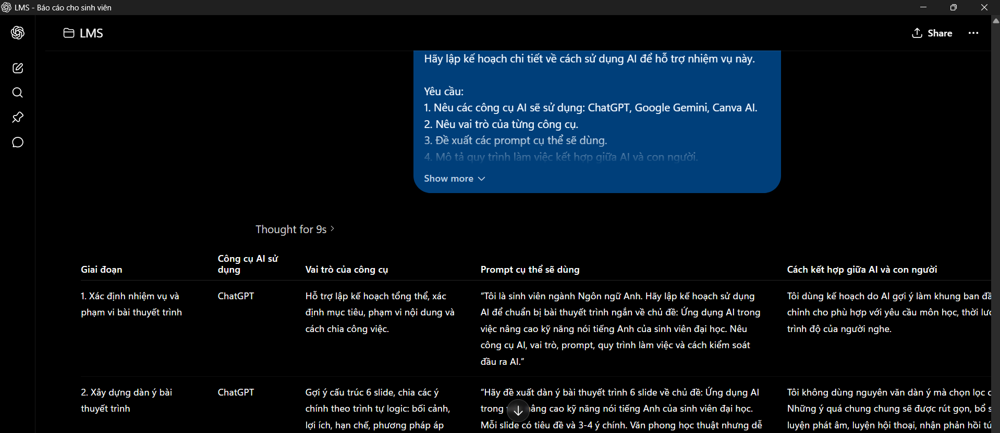
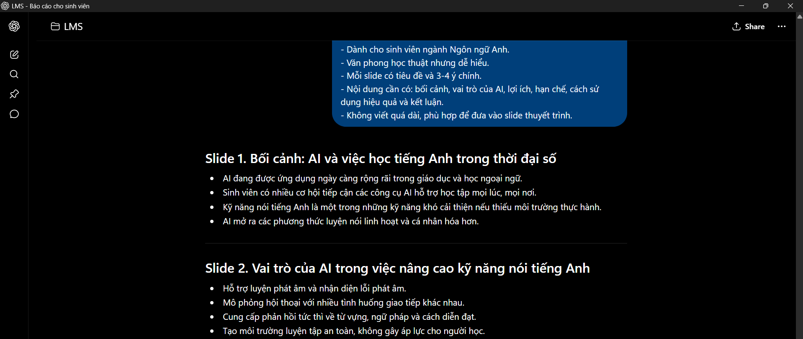
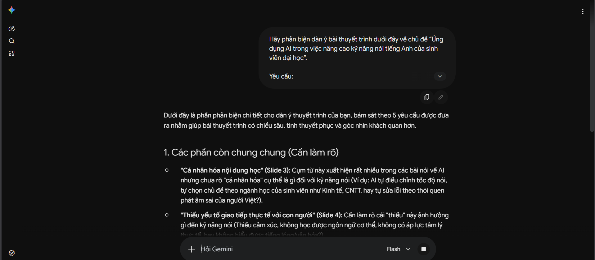
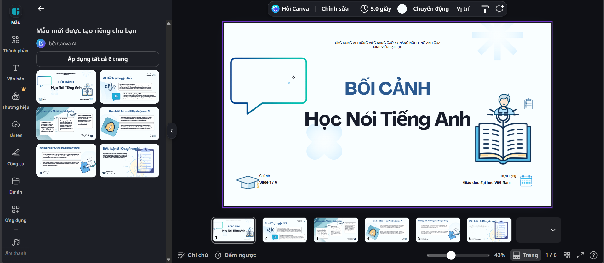
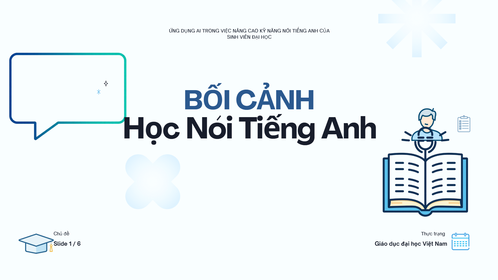

ĐẠI HỌC QUỐC GIA HÀ NỘI
TRƯỜNG ĐẠI HỌC NGOẠI NGỮ

BÁO CÁO CÁ NHÂN
Ứng dụng AI hỗ trợ học tập và nghiên cứu
| Sinh viên | Hoàng Chu Mỹ Anh |
|---|---|
| Ngành | Ngôn ngữ Anh |
| Khoa | Ngôn ngữ và Văn hóa Anh |
| Trường | Trường Đại học Ngoại ngữ - ĐHQGHN |
| Mã sinh viên | 25040391 |
| Lớp | VNU1001_E252058 |
Hà Nội, 2026.
1. Thông tin chung và nhiệm vụ học tập được lựa chọn
Bài báo cáo này trình bày quá trình cá nhân ứng dụng các công cụ AI để hỗ trợ một nhiệm vụ học tập cụ thể trong lĩnh vực giáo dục và ngôn ngữ. Nhiệm vụ được chọn là chuẩn bị một bài thuyết trình học thuật ngắn bằng tiếng Anh với chủ đề “The role of extensive reading in improving vocabulary for English learners”. Chủ đề này phù hợp với ngành Ngôn ngữ Anh vì liên quan trực tiếp đến kỹ năng đọc, phát triển vốn từ và phương pháp tự học ngoại ngữ.
Mục tiêu của việc sử dụng AI không phải để AI làm thay toàn bộ bài, mà là dùng AI như một công cụ hỗ trợ lập kế hoạch, gợi ý cấu trúc, tạo bản nháp, kiểm tra ngôn ngữ và thiết kế slide. Người học vẫn chịu trách nhiệm kiểm tra thông tin, chỉnh sửa nội dung, lựa chọn dẫn chứng và hoàn thiện sản phẩm cuối cùng.
| Nhiệm vụ học tập | Chuẩn bị bài thuyết trình tiếng Anh 6 slide về extensive reading và phát triển vốn từ. |
|---|---|
| Sản phẩm cuối cùng | Slide thuyết trình ngắn kèm dàn ý, nội dung chính và lời trình bày. |
| Công cụ AI sử dụng | ChatGPT, Google Gemini, Canva AI, Grammarly AI. |
| Vai trò của người học | Đặt prompt, đánh giá đầu ra, kiểm chứng nội dung, chỉnh sửa ngôn ngữ và hoàn thiện slide. |
| Minh chứng cần có | Ảnh chụp prompt, đầu ra AI, bản chỉnh sửa, sản phẩm slide cuối cùng và phần so sánh hiệu quả. |
2. Kế hoạch sử dụng AI
Kế hoạch sử dụng AI được xây dựng theo quy trình kết hợp giữa AI và con người. Trước hết, người học xác định mục tiêu, phạm vi và yêu cầu bài thuyết trình. Sau đó, AI được dùng để gợi ý cấu trúc, tạo bản nháp, phản biện nội dung và hỗ trợ thiết kế. Cuối cùng, người học tự biên tập, kiểm tra tính chính xác và hoàn thiện sản phẩm.
| Công cụ AI | Mục đích sử dụng | Prompt dự kiến | Cách kiểm soát |
|---|---|---|---|
| ChatGPT | Lập kế hoạch, tạo dàn ý, viết bản nháp nội dung slide. | Hãy lập kế hoạch sử dụng AI để chuẩn bị bài thuyết trình tiếng Anh 6 slide về extensive reading. | Chỉ giữ ý chính, viết lại bằng lời của sinh viên. |
| Google Gemini | Phản biện dàn ý, chỉ ra điểm chung chung, thiếu dẫn chứng hoặc dễ sai. | Hãy phản biện dàn ý sau và chỉ ra phần cần kiểm chứng thêm. | Đối chiếu với tài liệu học thuật và chỉnh lại nhận định quá rộng. |
| Canva AI | Gợi ý bố cục slide và thiết kế sản phẩm cuối. | Create a clean academic 6-slide presentation about extensive reading and vocabulary learning. | Chỉnh thủ công màu sắc, font, thứ tự nội dung và hình ảnh. |
| Grammarly AI | Kiểm tra lỗi diễn đạt, ngữ pháp và độ rõ ràng của lời thuyết trình. | Check clarity, grammar and academic tone of this short presentation script. | Không chấp nhận mọi gợi ý; ưu tiên câu tự nhiên, đúng ý cá nhân. |
Quy trình làm việc kết hợp giữa AI và con người
• Bước 1: Người học xác định chủ đề, yêu cầu số slide, đối tượng người nghe và tiêu chí đánh giá.
• Bước 2: ChatGPT tạo kế hoạch và dàn ý sơ bộ; người học chọn lọc, loại bỏ phần lan man.
• Bước 3: Gemini phản biện dàn ý và chỉ ra phần cần kiểm chứng; người học sửa lại luận điểm.
• Bước 4: Canva AI tạo bố cục slide; người học thay nội dung, chỉnh trình bày và thêm sản phẩm cuối.
• Bước 5: Grammarly AI hỗ trợ rà lỗi ngôn ngữ; người học đọc lại, luyện nói và hoàn thiện bản nộp.
3. Quá trình thực hiện, prompt và kết quả nhận được
| Bước | Prompt đã dùng | Kết quả AI | Cách đánh giá và tích hợp |
|---|---|---|---|
| 1 | “Hãy lập kế hoạch sử dụng AI để chuẩn bị bài thuyết trình tiếng Anh 6 slide về vai trò của extensive reading trong phát triển vốn từ cho sinh viên học tiếng Anh.” | AI đề xuất mục tiêu, công cụ, trình tự làm việc và các đầu việc cần thực hiện. | Giữ khung kế hoạch nhưng rút gọn để phù hợp thời gian làm bài. |
| 2 | “Hãy tạo dàn ý 6 slide bằng tiếng Anh cho chủ đề The role of extensive reading in improving vocabulary for English learners.” | AI tạo cấu trúc gồm khái niệm, lợi ích, ví dụ, hạn chế, cách áp dụng và kết luận. | Chỉnh lại tên slide, thêm phần liên hệ với sinh viên ngành Ngôn ngữ Anh. |
| 3 | “Hãy phản biện dàn ý trên: luận điểm nào còn chung chung, thiếu dẫn chứng hoặc cần diễn đạt học thuật hơn?” | Gemini chỉ ra phần lợi ích của đọc mở rộng cần tránh khẳng định tuyệt đối và nên nêu điều kiện áp dụng. | Sửa thành: đọc mở rộng có thể hỗ trợ tăng vốn từ khi được duy trì đều đặn và kết hợp ghi chú từ vựng. |
| 4 | “Create a clean academic 6-slide presentation about extensive reading and vocabulary learning. Use simple English, clear headings and minimal design.” | Canva AI gợi ý bố cục slide, màu sắc và cách sắp xếp nội dung trực quan. | Chỉnh lại font, thêm nội dung tiếng Anh ngắn, loại bỏ hình ảnh không phù hợp. |
4. Sản phẩm cuối cùng
Sản phẩm cuối cùng là một bài thuyết trình tiếng Anh gồm 6 slide. Nội dung được thiết kế ngắn gọn, có tính học thuật cơ bản và phù hợp với sinh viên ngành Ngôn ngữ Anh. Bài thuyết trình không sao chép nguyên văn đầu ra của AI mà đã được chỉnh sửa về bố cục, ngôn ngữ và độ chính xác.
| Slide | Tiêu đề | Nội dung chính |
|---|---|---|
| 1 | Introduction | Extensive reading means reading many texts that are suitable for the learner’s level and interest. |
| 2 | Why vocabulary matters | Vocabulary supports reading comprehension, speaking confidence and academic communication. |
| 3 | How extensive reading helps | Repeated exposure to words in context helps learners remember meaning, usage and collocations. |
| 4 | Practical application | Students can choose graded readers, short stories or articles, then keep a vocabulary notebook. |
| 5 | Limitations | Reading alone is not enough; learners still need review, speaking practice and teacher feedback. |
| 6 | Conclusion | Extensive reading is a useful long-term method when combined with clear goals and regular reflection. |
5. Đánh giá hiệu quả sử dụng AI
So với phương pháp truyền thống, AI giúp rút ngắn thời gian khởi động nhiệm vụ. Nếu làm hoàn toàn thủ công, người học cần nhiều thời gian để nghĩ bố cục, viết nháp, kiểm tra lỗi và thiết kế slide. Khi sử dụng AI, phần lập dàn ý và chỉnh ngôn ngữ được hỗ trợ nhanh hơn, nhưng người học vẫn phải đọc lại, kiểm chứng và chỉnh sửa để sản phẩm không bị chung chung.
| Tiêu chí | Cách làm truyền thống | Có AI hỗ trợ | Nhận xét |
|---|---|---|---|
| Thời gian lập dàn ý | Khoảng 30-45 phút | Khoảng 10-15 phút | AI giúp có khung ban đầu nhanh hơn. |
| Viết bản nháp nội dung | Khoảng 60 phút | Khoảng 25-30 phút | Cần chỉnh lại để tránh văn phong máy móc. |
| Thiết kế slide | Khoảng 60-90 phút | Khoảng 30-45 phút | Canva AI giúp nhanh nhưng bố cục vẫn cần chỉnh tay. |
Về chất lượng, sản phẩm cuối cùng rõ ràng hơn nhờ có nhiều vòng phản biện và chỉnh sửa. Tuy nhiên, hạn chế lớn nhất là AI có thể đưa ra thông tin quá rộng, thiếu ngữ cảnh hoặc diễn đạt giống văn mẫu. Vì vậy, người học cần dùng AI có chọn lọc, không coi đầu ra của AI là đáp án cuối cùng.
6. Minh chứng

Ảnh 1: Kế hoạch sử dụng AI trên ChatGPT.

Ảnh 2: Dàn ý 6 slide ChatGPT tạo.

Ảnh 3: Gemini phản biện dàn ý.

Ảnh 4: Canva AI tạo bố cục slide

Ảnh 5: Sản phẩm hoàn thiện.
7. Khó khăn và cách khắc phục
| Khó khăn | Ảnh hưởng | Cách khắc phục |
|---|---|---|
| AI trả lời dài và chung chung. | Nội dung khó đưa vào slide ngắn. | Yêu cầu AI rút gọn theo số slide, sau đó tự chọn ý quan trọng. |
| AI có thể tạo khẳng định quá chắc chắn. | Dễ làm bài thiếu tính học thuật. | Dùng Gemini phản biện và kiểm tra lại với tài liệu đáng tin cậy. |
| Canva AI tạo bố cục đẹp nhưng hơi đại trà. | Sản phẩm thiếu dấu ấn cá nhân. | Chỉnh lại màu, font, thứ tự slide và nội dung theo yêu cầu môn học. |
| Công cụ kiểm tra ngữ pháp đôi khi sửa sai ý. | Câu có thể mất giọng văn cá nhân. | Chỉ nhận các gợi ý giúp câu rõ hơn, không thay đổi ý chính. |
8. Kết luận
Qua bài thực hành này, tôi nhận thấy AI có thể hỗ trợ hiệu quả cho quá trình học tập và nghiên cứu, đặc biệt ở các bước lập kế hoạch, tạo dàn ý, phản biện nội dung và thiết kế sản phẩm. Tuy nhiên, hiệu quả của AI phụ thuộc rất nhiều vào chất lượng prompt và khả năng đánh giá của người học. Nếu chỉ sao chép đầu ra của AI, sản phẩm dễ thiếu chiều sâu và không thể hiện năng lực cá nhân.
Đối với sinh viên ngành Ngôn ngữ và Văn hóa Anh, AI có thể là công cụ hữu ích để luyện viết, sửa lỗi diễn đạt, xây dựng bài thuyết trình và mở rộng ý tưởng. Tuy vậy, người học cần sử dụng AI minh bạch, có kiểm chứng, có chỉnh sửa và luôn chịu trách nhiệm với sản phẩm cuối cùng.
9. Tài liệu tham khảo
British Council (2024) Artificial intelligence and English language teaching: Preparing for the future. TeachingEnglish.
Microsoft Learn (2026) Craft effective prompts for Microsoft 365 Copilot. Microsoft.
Monash University (2026) Acknowledging the use of AI. Student Academic Success.
UNESCO (2023) Guidance for generative AI in education and research. Paris: UNESCO.